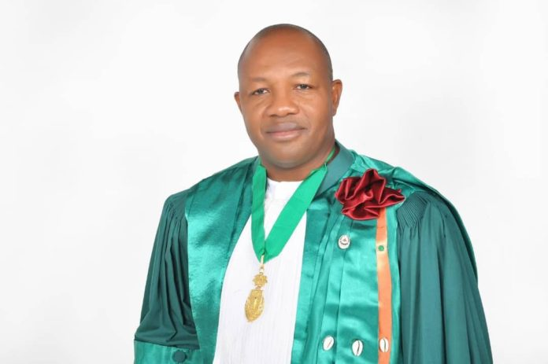
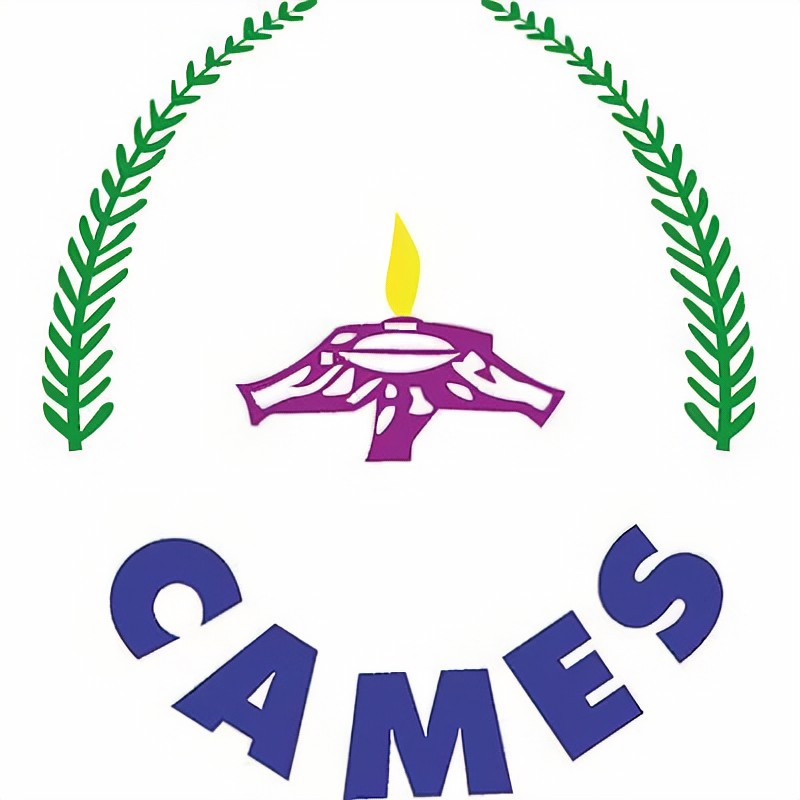

Enseignement supérieur : Le CAMES, c’est quoi?

Professeur titulaire des universités du CAMES en Ecologie, Pr KONATE Souleymane est
le nouveau SG de l'institution. Il rejoindra son poste, au Burkina Faso en janvier 2023.
Le Conseil africain et malgache pour l’enseignement supérieur (CAMES), créé en 1968, a pour
objectif de gérer les problématiques liées à l’enseignement supérieur, dans les pays d’Afrique et
à Madagascar. A l’occasion de l’élection de son nouveau Secrétaire général du 23 au 27 mai 2022, à
Kinshasa en RDC, l’institution a levé le voile sur ses principales missions.

Le Conseil africain et malgache pour l’enseignement supérieur (CAMES) est une institution
inter-Etats qui réunit 19 pays d’Afrique francophone. Il est chargé entre autres de la reconnaissance
des diplômes de l’enseignement supérieur, au sein des pays membres. Ce sont : le Bénin, le Burkina Faso,
le Burundi, le Cameroun, la Centrafrique, le Congo, la Côte d’Ivoire, le Gabon, la Guinée, la Guinée-Bissau,
la Guinée Equatoriale, Madagascar, le Mali, le Niger, la République Démocratique du Congo (RDC), le Rwanda,
le Sénégal, le Tchad et le Togo. L’idée de création du CAMES a été murie au début des indépendances des
pays africains. Au sortir de la Conférence des ministres de l’Education nationale à Paris en 1966, a été
votée une résolution donnant mandat à la Commission consultative d’experts pour la réforme de
l’Enseignement en Afrique et à Madagascar. Celle-ci a été mise en place, quelques années plus
tôt, afin d’entreprendre une recherche approfondie sur les structures et les enseignements des
Universités africaines et Malgache, dans un esprit de coopération interafricaine. Les 22 et 23
janvier 1968, à Niamey, au Niger, les chefs d’Etat de la défunte Organisation commune africaine
* et malgache (OCAM), sur la base des réflexions menées par la Commission, décident de porter
le Conseil africain et malgache pour l’enseignement supérieur sur les fonts baptismaux.
L’institution fonctionne, dès cet instant, avec comme premier Secrétaire général,
le professeur burkinabè Joseph Ki-Zerbo. Cinq ans plus tard, soit le 26 avril 1972,
la convention portant statut et organisation du CAMES est signée par les seize chefs
d’État ou de gouvernement de l’OCAM. Au fil du temps, tous les textes juridiques de
l’institution sont actualisés, notamment entre 1998 et 1999. En avril 2000, au cours de sa
17e session tenue à Antanarivo à Madagascar, le Conseil des ministres du CAMES adopte
l’ensemble des textes juridiques actualisés de l’institution universitaire. Il s’agit
notamment de :
l’accord portant création et organisation des Comités consultatifs interafricains
de l’enseignement supérieur et de la recherche scientifique,
de l’accord relatif au concours d’agrégation de sciences juridiques, politiques, économiques et
de gestion,
et de l’accord relatif au concours d’agrégation de médecine humaine, pharmacie, odontostomatologie,
médecine vétérinaire et productions animales. À ces textes, il faut ajouter
le règlement intérieur du Secrétariat général. Le CAMES regroupe, à ce jour, 19
États francophones d’Afrique et de l’Océan indien.
Les missions du CAMES
En vue de gérer les problématiques de l’enseignement supérieur et de recherche scientifique
des pays membres, le CAMES a pour missions, plus spécifiquement, de promouvoir et favoriser la
compréhension et la solidarité entre les États membres et d’instaurer une coopération culturelle et
scientifique permanente entre les États membres. Il a également pour but de rassembler et diffuser
tous documents universitaires ou de recherche: thèses, statistiques, informations sur les examens,
annuaires, annales, palmarès, information sur les offres et demandes d’emploi de toutes origines. En
outre, le CAMES s’attache à préparer les projets de conventions entre les États concernés, dans les
domaines de l’enseignement supérieur, de la recherche et à contribuer à l’application de ces conventions.
L’institution a également pour objectifs de concevoir et promouvoir la concertation en vue de coordonner
les systèmes d’enseignement supérieur et de la recherche. Ce, pour harmoniser les programmes et les niveaux
de recrutement, dans les différents établissements d’enseignement supérieur et de recherche, favoriser la
coopération entre les différentes institutions, ainsi que des échanges d’informations.
Comment l’institution est gérée
Si le CAMES est géré au quotidien par un Secrétaire général, l’organisation comporte plusieurs
instances qui participent à sa vie. Le Conseil des ministres reste la plus haute instance du CAMES
dont le fonctionnement s’adosse sur un Comité d’experts. Le CAMES s’appuie également sur une instance
académique et scientifique : le Comité consultatif général (CCG). C’est un outil consultatif de pilotage
académique et scientifique qui regroupe des responsables d’universités, d’institutions académiques et de
recherche inter-États, de Centres de recherche et les institutions d’enseignement supérieur privé
partenaires. Il convient de signaler la Commission d’éthique et de déontologie qui est établie par
le Code d’éthique et de déontologie. Elle veille sur le bon fonctionnement des programmes
de l’institution, selon les valeurs normatives du CAMES. Pour finir, la chancellerie de l’Ordre
international des palmes académiques du CAMES (OIPA/CAMES) dont le rôle est de décorer des
personnalités, politiques, scientifiques ou de la société civile, ayant rendu un service signalé
à l’enseignement supérieur et à la recherche, dans l’espace CAMES ou ailleurs.
SG du CAMES : que gagne la Côte d’Ivoire ?
C’est à l’issue d’un lobbying intense, mené par le ministre de l’Enseignement supérieur
et de la recherche scientifique, Pr Adama Diawara, fortement appuyé par le chef de l’Etat
Alassane Ouattara, que Pr Souleymane Konaté a été élu Secrétaire général du Conseil africain
et malgache pour l’enseignement supérieur (CAMES), à l’issue de la 39ème session du Conseil
des ministres de cette institution, qui s’est tenue du 23 au 27 mai 2022, à Kinshasa, en République
Démocratique du Congo.
Assurer le Secrétariat général d’une institution telle que le CAMES est d’abord, pour le pays, une
reconnaissance de la qualité de la formation des ressources humaines. C’est plus une position
stratégique au sein d’un organisme régional en charge de la coordination des politiques d’enseignement
supérieur et de recherche. En proposant un de ses ressortissants au poste, et en le remportant, la Côte
d’Ivoire affirme son ancrage dans l’institution à laquelle elle a adhéré. La Côte d’Ivoire est membre du
CAMES depuis 1968 et c’est la première fois qu’un Ivoirien occupera ce poste de responsabilité au sein
de l’institution. L’accession à ce poste corrige une certaine anomalie. C’est aussi l’affirmation du rôle
de leadership et de champion du développement socio-économique du pays, à travers l’enseignement supérieur
et la recherche. C’est également une fierté nationale et surtout une grande contribution à la motivation
des enseignants chercheurs, chercheurs et étudiants ivoiriens. Ce pays d’Afrique de l’Ouest gagne, en
terme de valorisation et de redynamisation de son système, car désormais, il doit donner l’exemple,
être un modèle, retrouver sa place de leader, dans le classement des universités et structures de
recherche du continent. C’est aussi une émulation pour la jeunesse qui a besoin de modèles de
réussite.
Qui est le nouveau SG du CAMES
Professeur titulaire des universités du CAMES en Ecologie, le nouvel élu qui rejoindra son poste,
au Burkina Faso en janvier 2023 est actuellement Directeur général de la Recherche et de l’innovation
au ministère de l’Enseignement supérieur et de la recherche scientifique. Pour ce qui est de sa contribution
à l’enseignement, à la formation et à la recherche, Pr Souleymane Konaté totalise 23 ans d’enseignement dans
les universités africaines et européennes (Côte d’Ivoire, Ghana, Burkina Faso, Gambie, Niger, RDC,
Madagascar, Egypte, France, Allemagne…) Il a encadré 9 thèses de doctorat et a à son actif 82 publications
scientifiques ainsi que la coédition d’un atlas sur la biodiversité de l’Afrique de l’Ouest. Au sein du
CAMES, il est membre du Comité consultatif général et membre fondateur du Programme thématique de
recherche sur la biodiversité. Il est également membre du Comité des experts du Conseil des ministres
du CAMES. Pr Souleymane Konaté est, depuis 2021, commandeur dans l’Ordre du mérite de l’éducation
nationale de Côte d’Ivoire et lauréat du prix international « 2004 Start Young Scientist Award »
en Ecologie.